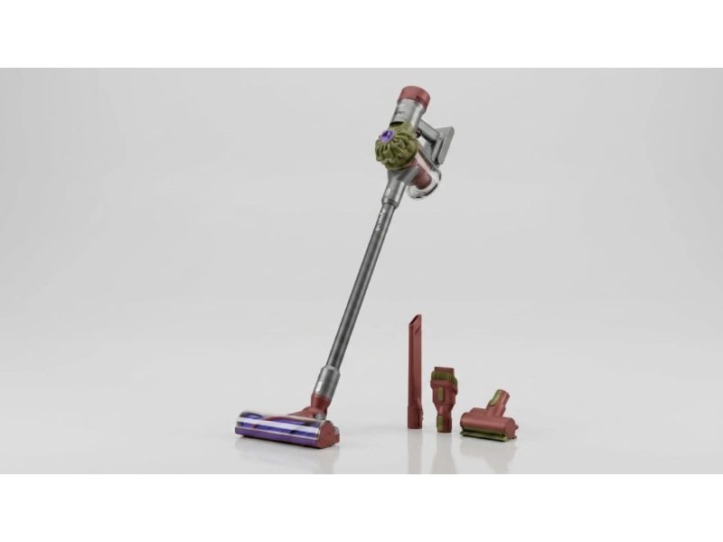
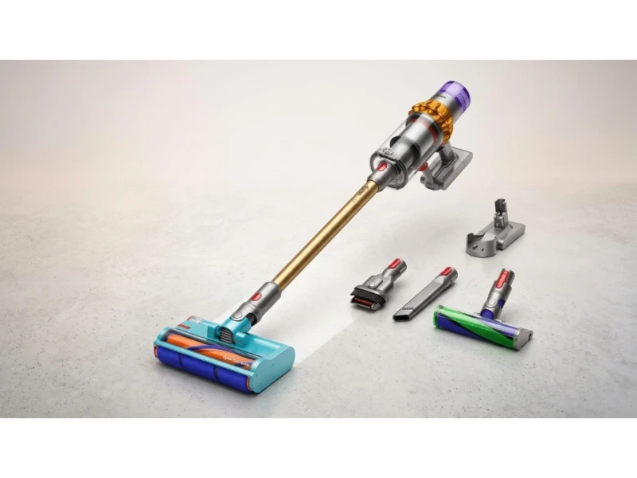

Finding the right Dyson cordless vacuum in 2026 is not as simple as picking the newest model. Each option is built for a different type of home, cleaning habit, and user comfort. Some focus on raw suction power, others on lightweight handling, and a few introduce advanced technology that sounds impressive but raises real questions.
If you've been comparing models, you've probably noticed the confusion. One vacuum talks about a laser revealing dust. Another highlights a built-in tool hidden inside the wand. And then there's the question everyone asks: does higher suction actually mean better cleaning?
This guide breaks everything down clearly. You'll learn how Dyson cordless vacuums really perform in everyday use — not just specs on paper, but how features like cyclonic technology, battery runtime, dustbin capacity, and motorized brush heads affect real cleaning tasks.
By the end, you'll know exactly which Dyson cordless vacuum fits your needs without wasting money on features you don't need.
Top 5 Dyson Cordless Vacuums
Dyson has refined its cordless lineup over the years, but in 2026, five models stand out for different reasons. Each one targets a specific type of user, from performance-focused buyers to those who want something lightweight and easy to handle. Here are the five models covered in this guide:
- Dyson V15 Detect — Best Overall Dyson Cordless Vacuum
- Dyson Gen5detect — Best for Maximum Suction Power
- Dyson V12 Detect Slim — Best Lightweight Dyson
- Dyson V8 — Best Budget-Friendly Dyson
- Dyson V15s Detect Submarine — Best for Wet + Dry Cleaning
Now let's take a closer look at each model.

1. Dyson V15 Detect — Best Overall Dyson Cordless Vacuum
The Dyson V15 Detect sits right in the middle of power, technology, and usability. It's the model most people compare everything else against, and for good reason. The V15 Detect combines strong suction power, intelligent sensors, and practical cleaning tools to deliver consistent performance across different floor types. It balances advanced features with real usability, making it a reliable choice for most households.
Key Specs
The first thing you notice is the suction power. With around 230 to 240 air watts, it handles both hard floors and carpets without needing constant adjustments. In everyday cleaning, this means fewer passes and less effort.
What really stands out is the Fluffy Optic cleaner head. The green laser is angled precisely at 1.5 degrees, which helps highlight fine dust particles that are normally invisible under regular lighting. When cleaning under furniture or along hard floors, you'll actually see what you missed before. This leads to a real behavior change — users tend to clean more thoroughly because they can see the dust clearly.
The Piezo sensor uses acoustic vibrations to detect dust particles and measure their size, processing data thousands of times per second. When it detects more debris, the motor automatically increases suction power. So the LCD graph isn't just for display — it directly influences how the vacuum adjusts itself in real time. This is especially useful when moving from hard floors to rugs or carpets.
Battery runtime lands around 40 to 45 minutes in Auto mode, which is where most people keep it. Because the vacuum adjusts suction automatically, the battery drains more efficiently — you're not constantly running at full power.
- Balanced suction power across all floor types
- Laser reveals fine dust invisible to the naked eye
- Piezo sensor auto-adjusts suction in real time
- Anti-tangle brush design reduces hair wrap
- Real-world runtime shorter than advertised in boost mode
- No auto-empty base option

2. Dyson Gen5detect — Best for Maximum Suction Power
If the V15 is about balance, the Gen5detect is about pushing performance further. It focuses heavily on raw power and added convenience, even if that comes with trade-offs. The Gen5detect is designed for users who prioritize maximum suction power and efficiency during cleaning. It introduces new features like a built-in tool and improved filtration while simplifying operation with a single-button control system.
Key Specs
With suction ranging between 280 and 300 air watts, this is the most powerful cordless vacuum in Dyson's lineup. In real use, this translates to deeper carpet cleaning and better pickup of embedded debris. If you have thick carpets or high-traffic areas, the difference is noticeable compared to lower-powered models.
One of the most practical upgrades is the built-in dusting and crevice tool hidden inside the wand. Instead of stopping to switch attachments, you simply detach the wand and start using the tool immediately. This saves time during whole-house cleaning and keeps the workflow smooth — a small detail that reduces interruptions significantly.
The Gen5detect includes advanced HEPA filtration that captures 99.9% of particles as small as 0.1 microns. For households concerned about allergens, dust sensitivity, or indoor air quality, this feature adds real value. The shift to a single-button power system also improves usability, eliminating the need to hold down a trigger constantly.
At around 3.5 kg, the Gen5detect is noticeably heavier than other models. Over short cleaning sessions it feels manageable, but during longer sessions — especially when cleaning above shoulder height — users often experience wrist fatigue.
- Highest suction power in the Dyson cordless lineup
- True HEPA filtration down to 0.1 microns
- Built-in crevice and dusting tool in the wand
- Single-button start reduces finger fatigue
- Heavier than most Dyson models at ~8.6 lbs
- Higher power use drains battery faster in boost mode

3. Dyson V12 Detect Slim — Best Lightweight Dyson
The Dyson V12 Detect Slim is built for a very specific type of user. It focuses less on raw power and more on comfort, control, and ease of use. If heavier vacuums feel tiring, this model starts to make a lot more sense. The V12 Detect Slim is designed for users who want a lightweight vacuum that is easy to handle daily — it trades some suction power and dustbin size for better ergonomics, making it ideal for smaller homes and quick cleaning sessions.
Key Specs
At just 5.2 pounds, this is the lightest "Detect" model in the Dyson lineup. You feel the difference immediately. Moving between rooms, cleaning stairs, or reaching high corners becomes much easier. For people with wrist pain or joint sensitivity, this is often the deciding factor. It also uses a button-start system instead of a trigger, improving comfort during longer sessions.
With around 150 air watts of suction, the V12 is clearly less powerful than the V15 or Gen5detect. But in real-world use, it depends on your home. For hard floors, tiles, and low-pile carpets, the V12 performs well. The limitation shows up on thick carpets where deeper dirt requires more power.
Like the V15, the V12 includes a Piezo sensor and LCD display. It tracks dust particles and adjusts suction automatically, giving you real-time feedback that helps guide your cleaning. The smaller dustbin — around 0.09 to 0.1 gallons — means more frequent emptying in larger spaces, but for a small apartment it's manageable.
- Lightest Detect model at 5.2 lbs
- Button-start system, no trigger to hold
- Piezo sensor and LCD feedback included
- Easy to maneuver on stairs and tight spaces
- Lower suction struggles on thick carpets
- Small dustbin requires frequent emptying

4. Dyson V8 — Best Budget-Friendly Dyson
The Dyson V8 has been around for years, but it still shows up in buying decisions in 2026. The V8 remains a practical option for users who want a reliable cordless vacuum at a lower price. While it lacks newer smart features and higher suction, it still handles basic cleaning tasks effectively for many households.
Key Specs
The V8 doesn't compete with newer models in terms of suction power, but it still performs well for light to moderate cleaning. On hard floors and low-pile carpets, it handles dust and small debris without trouble. This makes it more suitable as a daily maintenance vacuum rather than a deep-cleaning tool.
One positive update in newer versions is the inclusion of the Hair Screw Tool, previously limited to more expensive models. It works well for removing hair from upholstery, car seats, and smaller surfaces, and reduces tangling for pet owners.
One known issue is "carpet stall" on high-pile carpets, where the vacuum creates too much suction and stops moving forward. The simple fix is switching to a lower suction setting. It's a small adjustment, but it makes a big difference in usability.
Dyson lists runtime of up to 40 minutes, achievable in standard mode. But MAX mode usually lasts only around 5 to 7 minutes — one of the most common complaints from users.
- Lower price point than newer models
- Hair Screw Tool included in newer versions
- Reliable whole-machine filtration
- Lightweight and easy to maneuver
- No smart sensors or LCD display
- MAX mode battery drains in 5–7 minutes
- Can stall on high-pile carpets

5. Dyson V15s Detect Submarine — Best for Wet + Dry Cleaning
The Dyson V15s Detect Submarine introduces something different — a wet cleaning feature added to a cordless vacuum. The V15s cannot vacuum and mop at the same time. It uses separate cleaning heads for dry vacuuming and wet cleaning, meaning you need to switch attachments depending on the task.
Key Specs
The Submarine head is designed for wet cleaning hard floors. It uses a spinning roller that applies water and removes dirt at the same time — but importantly, it does not use suction. Instead, it relies on the rotating roller to lift dirt, which is then collected into a separate tray. This makes it very different from traditional vacuum heads.
The built-in water tank holds around 300 mL, enough to clean approximately 1,200 square feet in one go. For small to medium spaces this works fine, but larger homes may require a refill during cleaning.
The wet cleaning feature works well for light spills, dust, and surface dirt on hard floors. But it's not a replacement for deep mopping — stubborn stains may still require manual cleaning. You'll typically need to vacuum first, then switch to the Submarine head for wet cleaning.
After each use, the Submarine head needs to be properly cleaned: the dirty water tray must be emptied and the roller washed and dried. Skipping this step can lead to odor or mold buildup. So while the feature adds convenience in theory, it also adds extra maintenance work.
- Adds wet cleaning without a separate device
- 300 mL tank covers ~1,200 sq ft per fill
- Strong 230 AW suction in vacuum mode
- Cannot vacuum and mop simultaneously
- Submarine head requires thorough cleaning after each use
- Not a replacement for deep mopping
Comparison: Top 5 Dyson Cordless Vacuums Side by Side
| Model | Suction | Runtime | Weight | Filtration | Best For |
|---|---|---|---|---|---|
| Dyson V15 Detect | 230–240 AW | ~45 min | ~6.8 lbs | Advanced | Balanced all-rounder |
| Dyson Gen5detect | 280–300 AW | ~40–60 min | ~8.6 lbs | HEPA 0.1μm | Maximum power |
| Dyson V12 Detect Slim | 150 AW | ~40–50 min | 5.2 lbs | Advanced | Lightweight handling |
| Dyson V8 | Older gen | ~30–40 min | ~5.6 lbs | Standard | Budget-friendly |
| Dyson V15s Submarine | 230 AW | ~45 min | ~8 lbs | Advanced | Vacuum + wet cleaning |
How to Choose the Right Dyson Cordless Vacuum
1. Suction Power vs. Practical Needs
Higher suction helps with deep carpet cleaning, but also drains the battery faster and can make the vacuum harder to handle. For hard floors and light cleaning, moderate suction like the V12 is often enough. For carpeted homes or heavy debris, step up to the V15 or Gen5detect.
2. Weight and Daily Comfort
Weight plays a bigger role than most people expect. The V12 feels the easiest to use over time. The V15 is balanced enough for most users. The Gen5detect becomes tiring during longer sessions, especially when used above shoulder height. If you have wrist pain or joint sensitivity, lighter always wins.
3. Smart Features and Sensors
The Piezo sensor and LCD display on the V15 and V12 give you real-time feedback on dust levels and auto-adjust suction. The V8 lacks these features entirely. If you want a vacuum that thinks for itself, stick to the Detect lineup.
4. Filtration and Air Quality
HEPA filtration matters if you are sensitive to dust or allergens. The Gen5detect captures particles down to 0.1 microns with a fully sealed system. The V15 and V12 offer advanced filtration. The V8 uses standard whole-machine filtration, which is sufficient for general cleaning but not for allergy-sensitive households.
5. Dustbin Size and Maintenance
Smaller bins like the V12 require more frequent emptying, while larger bins last longer between uses. The V15s Submarine adds a separate wet cleaning tray that must also be cleaned after each use — factor in maintenance time before choosing.
Frequently Asked Questions
Is higher suction power always better?
Not always. Higher suction helps with deep carpet cleaning, but it also drains battery faster and can make the vacuum harder to handle. For hard floors and light cleaning, moderate suction is often enough.
Do Dyson cordless vacuums work well on carpets?
Yes, especially models like the V15 Detect and Gen5detect. They adjust suction automatically and use motorized brush heads to lift dirt from carpets effectively. The V12 handles low-pile carpets well but struggles on thicker rugs.
Does the laser feature on the V15 actually help?
Yes. The green laser is angled at 1.5 degrees to illuminate fine dust particles invisible under normal lighting. In real use, it changes how thoroughly people clean — you'll see dust you would otherwise walk past.
How important is HEPA filtration?
It matters if you are sensitive to dust or allergens. HEPA filtration captures very fine particles and improves indoor air quality. For general cleaning, standard filtration is usually sufficient.
Can the V15s Detect Submarine vacuum and mop at the same time?
No. The V15s uses separate heads for dry vacuuming and wet cleaning. You need to switch attachments between tasks. It's two tools in one device, not a simultaneous vacuum-and-mop solution.
Is the Dyson V8 still worth buying in 2026?
For budget-conscious buyers with smaller homes and light cleaning needs, yes. It lacks smart sensors and loses power quickly in MAX mode, but it remains reliable for everyday maintenance cleaning at a lower price point.
Conclusion & Final Recommendations
Choosing the right Dyson cordless vacuum depends on how you clean, not just what looks impressive on paper.
If you want a balanced option that handles most situations well, the Dyson V15 Detect is the most reliable choice. It combines strong suction, smart automation, and practical usability without forcing trade-offs.
If power is your priority, the Gen5detect delivers the highest suction with premium HEPA filtration, though the added weight is a real consideration. If comfort matters more, the V12 Detect Slim offers lightweight handling with smart sensors intact — ideal for apartments and smaller spaces.
The V8 remains a solid option for budget-conscious users who need reliable everyday cleaning. And the V15s Detect Submarine adds wet cleaning for those who want an all-in-one approach and don't mind the extra maintenance.
Focus on what actually affects your daily cleaning: how long you clean at once, the type of floors in your home, whether weight and comfort matter to you, and how much maintenance you're willing to handle. Match those factors to the right model, and the decision becomes much simpler.